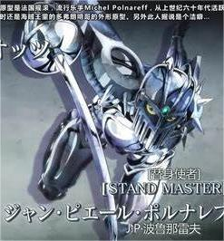

>
| 替身使者 | 替身 | 替身面板 | 阵营 | 能力 |
|---|---|---|---|---|
| 空条承太郎 |
白金之星（Star Platinum） |
主角团 | 流星指刺白金之星·世界白金之星·超越天堂 | |
| 花京院典明 |
法皇之绿（Heirophant Green） |
主角团 | 绿宝石水花半径20m绿宝石水花 | |
| 简·皮耶尔·波鲁那雷夫 |
银色战车（Silver Chariot）  |
主角团 | 西洋剑剑术剑身射出剑身的防护功能甲胄脱衣 | |
| 乔瑟夫·乔斯达 |
隐者之紫（Hermit Purple） |
主角团 | 念写照片机器操作念写地图远程移动获取记忆 | |
| 穆罕默德·阿布德尔 |
魔术师之红（Magican's Red） |
主角团 | 火焰操纵赤荒绳十字火焰旋风十字火焰旋风·特殊版火焰生物探测器 破坏力 |
|
| 伊奇 |
愚者(The Fool) |
主角团 | 沙子操纵沙子变形/伪装沙子滑翔翼沙子堡垒元素化替身 | |
| 迪奥·布兰度 |
世界（THE WORLD） |
BOSS | 近距离力量型的超强身体素质射程10m时间停止可以看到时间停止中的世界 |